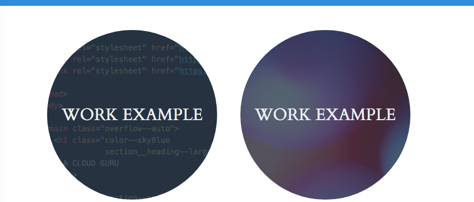

- AWS Serverless and React App

- Work Example
Careeer long software development professional with significant experience across most aspects of the SDLC. • My level of job satisfaction is primarily determined by the value my teams and I are contributing to an organization, and the collaboration level across an organization. • Looking for an organization that needs my combination of software management and technical skills to manage software development teams in a way that optimizes People, Technology, and Process to deliver solutions for stakeholders. • Extensive experience managing software dev organizations and projects that deliver, as well as defining and coordinating software architectures and product requirements. • Also enjoyed hands-on Java and C++ coding roles I held for many years. • 20+ years of software development management and leadership experience at multiple levels, 15+ years of hands on software development and architecture experience for complex distributed systems, 5+ years of scrum master experience.